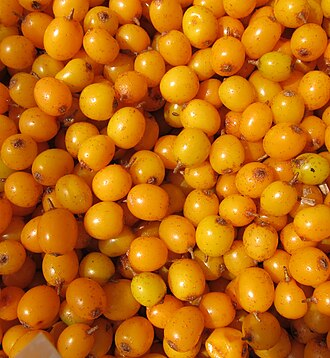

シーベリーの生産量 都道府県ランキング
収穫量
シーベリーの収穫量が全国で最も多いのは北海道で、4 tです。産地は1県のみで、全国の全量にあたります。

| 順位 | 都道府県 | 収穫量 | 全国に占める割合 |
|---|---|---|---|
| 1位 | 北海道 | 4 t | 100% |
シーベリーの生産量の推移（令和3年産〜令和5年産）
全国の収穫量は、令和3年産の3 tから令和5年産の4 tへ、16%増えました。期間中、1位は一貫して北海道です。
| 年 | 全国 | 1位 | 2位 | 3位 |
|---|---|---|---|---|
| 令和5年産 | 4 t | 北海道4 t | ||
| 令和4年産 | 2 t | 北海道2 t | ||
| 令和3年産 | 3 t | 北海道3 t |
この数字について
- 分類：グミ科
- 全国の収穫量：4 t
- この数字が表すもの：収穫量（収穫された重量）
- 調査：特産果樹生産動態等調査 令和5年産
- この品目は統計に上位3産地しか載っていません。4位以下は国が公表していないため分かりません。
- 産地の量は1t単位に丸めて公表されています（全国の量は0.1t単位）。生産量が少ない品目では、丸めの影響で産地の数量が全国を少し超えることがあります。割合に「約」を付けているのはそのためです。
シーベリーの生産量について、よくある質問
- シーベリーの生産量が日本一の都道府県はどこですか？
- 北海道です。特産果樹生産動態等調査（令和5年産）で4 tでした。
- シーベリーの全国の生産量はどれくらいですか？
- 4 t（令和5年産）です。